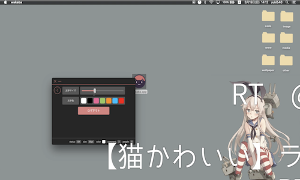

Profile
私、yuki540はこんな人物です。
yuki540
Age: 20
Birthday: 1996.11.09
Location: Wakayama, Japan
Job: 専門学生（3年生）
Language
CoffeeScriptJavaScriptRubyPythonPHPHTML5CSS3Like
Live2DElectronCordovaRiot.jsNode.jsDevice
MacBook_ProGalaxy_S7_EdgeRaspberry_PIAbout
私、yuki540は、アニメ、声優、漫画が好きな人物である。好きな声優は、巽悠衣子である。
「さくら荘のペットな彼女」を読み、プログラマーになることを決意。
Live2Dに憧れ、Live2Dライクなオープンソースソフトウェアを専門学校２年生のときに開発。
Macには、ステッカー貼る勢。
将来、どういうことをしたいのかまだ定まっていない様子。
Product
yuki540が製作したものを公開。

satella.io
Live2Dライクなオープンソースソフトウェア
「絵を動かす。心を動かす。」
「イラストに命を吹き込む」技術を開発し、OSSとして公開することは、私にとっていい経験になりました。
このソフトウェアが、誰かにとっての技術的なヒントになることを祈ります。
satella.ioは、「satella.pro」に改名し、さらなる進化にご期待ください。
2017/02/05

Shuvi
フレームレスなYouTubeプレイヤー
Shuviの特徴は、設計そのもののシンプルさです。
MacのQuickTime PlayerのようなUIに、フレームレスなウィンドウを兼ね添えています。
Shuviは、大きさや形にとらわれることなく、リサイズすることができます。
ソースコードはGitHub上で公開。
2017/05/13

shuvi-lib
YouTube IFrame Player APIをゆるふわにラッピングしたライブラリ
shuvi-libは、YouTube IFrame Player APIをゆるふわにラッピングしたライブラリです。
shuvi-libを使えば、YouTube IFrame Player APIをより簡単に操作することが可能です。
ソースコードはGitHub上で公開。
2017/05/14

若葉
PC画面上にコメントが流せるデスクトップアプリ
「若葉」は、PC画面上にコメントが流せるElectron製のデスクトップアプリです。
コメントはTwitterから特定のキーワードを含むツイートを取得して流します。
ソースコードはGitHub上で公開。
2017/03/19

兎亜
シンプルで可愛いミュージックプレイヤー
「ミュージックプレイヤーとしての最良の選択。」
選択したディレクトリ内のmp3ファイルを再生するという、シンプルな設計のソフトウェアです。
コンパクトなウィンドウサイズなので、デスクトップでの作業スペースを奪うことなく配置できます。
ソースコードはGitHub上で公開。
2017/04/08

音卵
声優ラジオ音泉をダウンロードするAndroidアプリ
音卵は、Cordovaで作られたAndroidアプリです。
声優ラジオ音泉をダウンロードすることが可能です。
Google Playにて公開。
ソースコードはGitHub上で公開。
2017/04/15

音泉ダウンローダー
声優ラジオサイト「音泉」ダウンロード用Chrome拡張
声優ラジオサイト「音泉」の音声・動画ファイルをダウンロードするChrome拡張です。
APIサーバにはonsen-nodeを使用しています。
Chromeウェブストアにて公開。
ソースコードはGitHub上で公開。
2017/02/25

onsen-node
声優ラジオ「音泉」APIライブラリ for Node
声優ラジオサイト「音泉」のAPIライブラリです。
「Node.js」から簡単に「音泉」の情報にアクセスすることが可能です。
コマンドライン上でも動作します。
ソースコードはGitHub上で公開。
2017/02/25

onsen-php
声優ラジオ「音泉」APIライブラリ for PHP
声優ラジオサイト「音泉」のAPIライブラリです。
「PHP」から簡単に「音泉」の情報にアクセスすることが可能です。
ソースコードはGitHub上で公開。
2017/02/25

nicoJS
ニコニコ風コメントを実装するライブラリ
ニコニコ動画風のコメントを実装するライブラリです。
Webサイトなどに簡単に組み込むことが可能です。
ソースコードはGitHub上で公開。
2016/09/25
web-icon-node
Webクリップアイコンを取得するライブラリ
Webクリップアイコンやファビコンなどのリンクを取得するライブラリです。
npm上で公開中。
Python・PHP版も公開予定。
ソースコードはGitHub上で公開。
2017/03/28

俺ガイル非公式サイト
「俺は、本物が欲しい。」
「やはり、俺の青春ラブコメはまちがっている。」の非公式サイトです。
俺ガイル好きのyuki540が衝動で作ったサイトです。
俺ガイルの世界観のような儚げなデザインが特徴です。
2016/03/20

COLORFUL_STEP
待ち望んだ全ては----そこにあるの
「やはり、俺の青春ラブコメはまちがっている。」のMADです。
動画編集に没頭していた頃の作品です。
曲はClariSの「STEP」で、静止画とアニメを組み合わせて、俺ガイルの世界観をカラフルに表現しています。
2016/03/20
Activity
私の活動や成果を公開。

Chrome拡張を用いたTwitterアカウントの奪取
Chrome拡張のマルウェアの話題が上がったので、Chrome拡張の危険性を試してみた。
題材は、Chrome拡張を用いたTwitterアカウントの奪取。
2017/04/08
ElectronでPC画面上にコメントが流せるデスクトップアプリを作ってみた
PC画面上にコメントが流せるデスクトップアプリ「wakaba」の記事をQiitaで書いた。
割と、好評で作った甲斐があった。
2017/03/19

Live2Dライクなオープンソースソフトウェアの開発
在学中の専門学校での作品発表会。
学科代表（IT学科）で「Live2Dライクなオープンソースソフトウェアの開発」という内容で登壇。
発表に使ったスライドは、ニコナレにて公開。
2017/02/26

日本最大の図書館検索サイト カーリルの脆弱性報告
日本最大の図書館検索サイト「カーリル」の脆弱性を報告。
お礼の品として、「カーリル」オリジナルのマグカップとコーヒーパックをもらう。
2017/02/26
News
ちょっとした出来事をお知らせ。
暑くなってきたので、北海道バニラを毎日食べてます。
髪切りました。
Galaxy_S7_Edgeを購入。
新型MacBook_Proを購入(タッチバーなし)。
satella.ioをオープンソースとして公開。
Contact
気軽にお声掛け下さい。